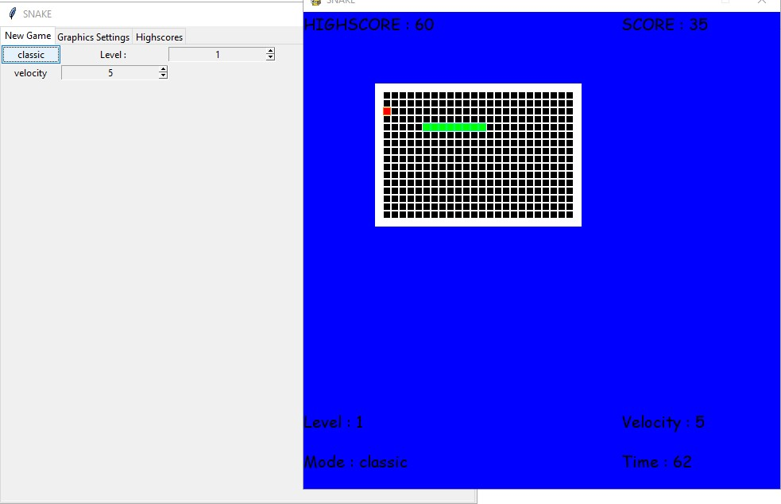
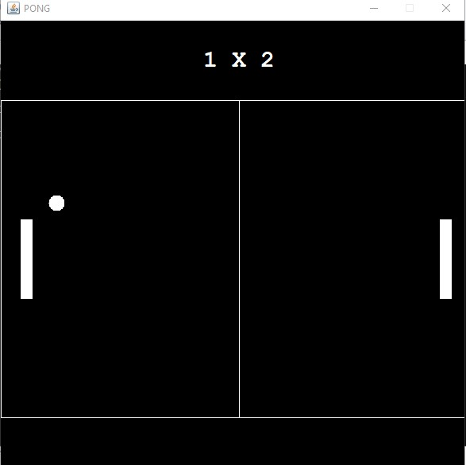
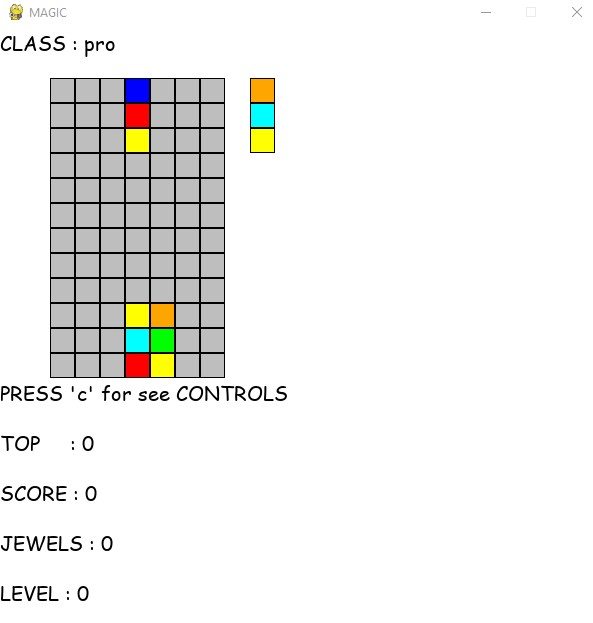
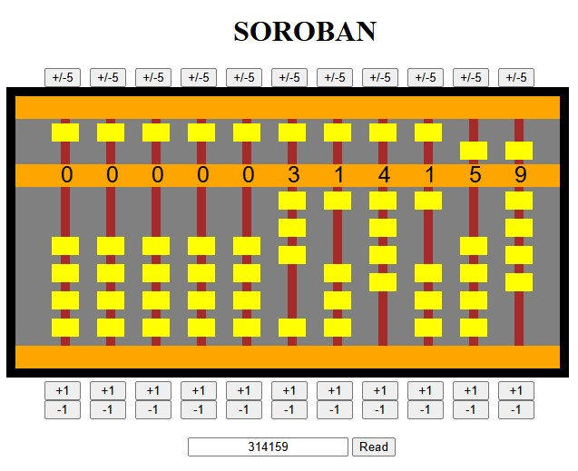
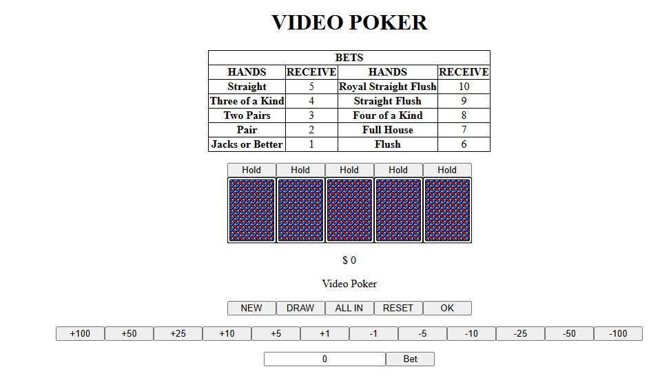

1 / 5

link
Implementação em python do Jogo Snake(do antigo celular Nokia). É possível configurar os gráficos e os modelos de jogo, além de possuir som.
2 / 5

link
Implementação em Java do jogo de Arcade Pong para 2 jogadores.
3 / 5

link
Implementação em python do jogo Colomns.
4 / 5
link
Aplicação Web de Soroban, um tipo de abaco.

5 / 5

link
Aplicação Web com o jogo video-poker.
❮
❯